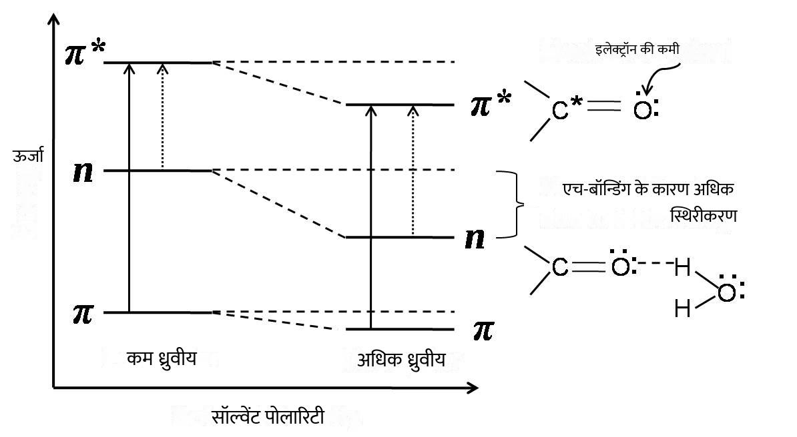

रासायनिक विज्ञान
→
आणविक अवशोषण स्पेक्ट्रोस्कोपी लैब
→
प्रयोगों की सूची
यूवी-दृश्य अवशोषण स्पेक्ट्रम पर विलायक प्रभाव
विलायक प्रभाव ध्रुवीयता, ढांकता हुआ गुण, फैलाव-प्रेरण-ध्रुवीकरण बातचीत, चिपचिपापन और / या विशिष्ट विलेय-विलायक बातचीत जैसे थोक विलायक गुणों का योग है। अंतर-आणविक हाइड्रोजन बंधन की अनुपस्थिति में, वर्णक्रमीय बदलाव मुख्य रूप से विलायक ध्रुवता के प्रति संवेदनशील होते हैं। सॉल्वेंटेड हाइड्रोकार्बन जैसे गैर-ध्रुवीय सॉल्वैंट्स के मामलों में सॉल्वेंट-विलेय इंटरैक्शन नगण्य हैं। इसलिए, इन nonpolar सॉल्वैंट्स में एक विलेय अणु के अवशोषण स्पेक्ट्रम शुद्ध गैसीय अवस्था में ठीक इसी तरह के वर्णक्रमीय विवरण दिखाता है।
हम जानते हैं कि इलेक्ट्रॉनिक संक्रमण अवशोषित अणु के आवेश वितरण को संशोधित करता है। इसलिए, विलायक ध्रुवीयता और संक्रमण के प्रकार के आधार पर, विलायक-विलेय बातचीत अलग-अलग होती है जो बदले में जमीन की ऊर्जा और प्रकाश अवशोषित अणु की उत्तेजित अवस्थाओं को निर्धारित करती है। यह दोनों शिखर स्थिति (λ) को प्रभावित करता है अधिकतम ) और अवशोषित अणु के अवशोषण (ε)। अवशोषकता, अवशोषित पदार्थ की एक विशेषता, एक उपयोगी मात्रा है जो हमें अणुओं में संक्रमण की संभावनाओं और प्रजातियों के प्रभावी प्रकाश कैप्चर क्षेत्र (प्रकाश अवशोषण के लिए क्रॉस-सेक्शन) के बारे में विचार देती है। यदि संक्रमण में शामिल क्रोमोफोर अपनी उत्तेजित अवस्था की तुलना में अपनी ज़मीन की स्थिति में अधिक ध्रुवीय होता है, तो ज़मीन की अवस्था उत्कीर्णन के कारण अधिक ध्रुवीय विलायक द्वारा उत्तेजित अवस्था की तुलना में अधिक स्थिर होती है। N → → के साथ क्रोमोफोर * या एन → σ * संक्रमण ऐसे व्यवहार का प्रदर्शन करते हैं। विलायक के अणुओं को विलेय (क्रोमोफोर) अणुओं के आसपास उन्मुख किया जाता है, जो विलेय अणुओं के जमीनी आवेश वितरण के साथ फिट होते हैं। हाइड्रोजन बॉन्डिंग या ध्रुवीय सॉल्वैंट्स जमीनी अवस्था अणु के अनियोजित इलेक्ट्रॉन युग्मों के साथ अधिक मजबूती से संपर्क करते हैं। उत्तेजना पर, इस तरह के सिस्टम में चार्ज वितरण स्पष्ट रूप से बदल जाता है और इसलिए, विलायक के अणुओं में उत्तेजित स्थिति चार्ज वितरण के साथ बातचीत करने के लिए स्थिति और अभिविन्यास नहीं होगा। इस प्रकार, ऐसे विलेय अणुओं की जमीनी अवस्था उत्तेजित अवस्था की तुलना में अधिक स्थिर होती है। यह जमीन के बीच ऊर्जा की खाई को बढ़ाता है और सॉल्वैंट्स (चित्रा 1) की बढ़ती ध्रुवता के साथ उत्साहित राज्यों को जोड़ता है। इसलिए, बढ़ती विलायक ध्रुवता के साथ n → more * तरह के इलेक्ट्रॉनिक संक्रमण के लिए अधिक ऊर्जा की आवश्यकता होती है। यह वर्णक्रमीय शिखर पदों की शिफ्ट में कम तरंग दैर्ध्य की ओर जाता है। दूसरी ओर, यदि क्रोमोफोर की उत्तेजित अवस्था जमीन की स्थिति के संबंध में अधिक ध्रुवीय है, तो एक अधिक ध्रुवीय विलायक द्वारा उत्तेजित अवस्था अधिक ठोस और अधिक स्थिर होगी। इस तरह की संपत्ति मामले क्रोमोफोर में π → ores * संक्रमण के साथ देखी जाती है। And इलेक्ट्रॉन घनत्व समान रूप से जमीनी अवस्था में वितरित किया जाता है और C नाभिक को परिरक्षित किया जाता है जबकि excited * उत्तेजित अवस्था में C नाभिक इलेक्ट्रॉन के प्रचार के कारण इलेक्ट्रॉन की कमी हो जाती है। यह अधिक ध्रुवीय या हाइड्रोजन बॉन्डिंग सॉल्वेंटैंड के साथ उत्साहित राज्य अणु के मजबूत संपर्क का पक्षधर है, जिससे जमीनी राज्य की तुलना में उत्साहित राज्य अधिक स्थिर हो जाता है। इससे उत्तेजित और जमीन के बीच ऊर्जा की खाई कम हो जाती है और बढ़ती विलायक ध्रुवीयता (चित्र 1) के परिणामस्वरूप अवशोषण तरंग पदों की शिफ्ट में लंबे समय तक तरंगदैर्ध्य होता है। हमें याद हो सकता है कि अवशोषण शिखर स्थिति (λ) की एक पारी अधिकतम ) कम तरंग दैर्ध्य की ओर एक नीली पारी या हाइपोक्रोमिक प्रभाव कहा जाता है। दूसरी ओर, λ की एक पारी अधिकतम लंबे समय तक तरंगदैर्ध्य को लाल पारी या बाथोक्रोमिक प्रभाव के रूप में कहा जाता है। जब अवशोषण की तीव्रता में वृद्धि होती है, (यानी, अवशोषण) प्रभाव को हाइपरक्रोमिक प्रभाव कहा जाता है। अगर अवशोषण की तीव्रता में कमी होती है, तो प्रभाव को हाइपोक्रोमिक प्रभाव कहा जाता है।

आकृति 1: N → π * और π → trans * संक्रमण पर विलायक ध्रुवता का प्रभाव।
विलायक पर निर्भर वर्णक्रमीय बदलाव जो क्रोमोफोर और आसपास के विलायक अणुओं के पूरे सेट के बीच बातचीत से उत्पन्न होते हैं और किसी भी रासायनिक बातचीत या विशिष्ट विलायक-क्रोमोफोर इंटरैक्शन को शामिल नहीं करते हैं, उन्हें "सामान्य विलायक प्रभाव" कहा जाता है। ऐसे मामलों में, जमीन की स्थिति और उत्साहित राज्य के बीच ऊर्जा विलायक और क्रोमोफोर के बीच द्विध्रुवीय बातचीत से प्रभावित होती है जो कि विलायक अपवर्तक सूचकांक और ढांकता हुआ निरंतर का कार्य है। सॉल्वैंशन ऊर्जा, अवशोषण या λmax की ऊर्जा के एक उपाय के रूप में केवल निरंतर ढांकता हुआ गुण (ढांकता हुआ निरंतर और अपवर्तक सूचकांक) लेना, विलायक ध्रुवीयता फ़ंक्शन, dief से संबंधित पाया जाता है। ध्रुवीयता फ़ंक्शन से गणना की जा सकती है
\ Begin {} समीकरण ∆f = [(D-1) / (2D + १)] - [(n ^ 2 - 1) / (2n ^ 2 + 1)] \ अंत {} समीकरण जहां D ढांकता हुआ स्थिर है और n विलायक का अपवर्तनांक है। यहाँ विलायक के प्रभाव को प्रदर्शित करने के लिए कई ध्रुवीय और नॉनपोलर सॉल्वैंट्स, अर्थात् साइक्लोहेक्सेन, डाइऑक्सेन, एसिटोनिट्राइल, इथेनॉल और एथिलीन ग्लाइकोल के कई गुणों का अध्ययन किया गया है।

चित्र 2: Coumarin138 की आणविक संरचना।
तालिका एक। विलायक गुण और अधिकतम अवशोषण और इसी अवशोषण तरंगदैर्ध्य (λmax) coumarin138 की।
|
विलायक |
अपवर्तक सूचकांक (n) |
ढांकता हुआ स्थिर (डी) |
Δ च |
पेट पर λ अधिकतम
|
एल अधिकतम (एनएम) |
|
cyclohexane |
1.424 |
2.01 |
|
|
|
|
dioxane |
1.420 |
2.21 |
|
|
|
|
acetonitrile |
1.342 |
35.94 |
|
|
|
|
इथेनॉल |
1.359 |
23.40 |
|
|
|
|
एथिलीन ग्लाइकोल |
1.429 |
38.69 |
|
|
|